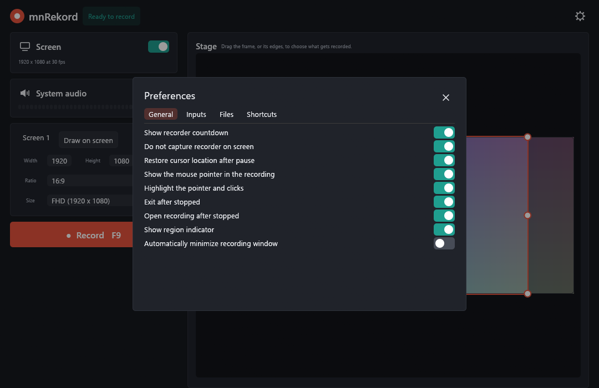
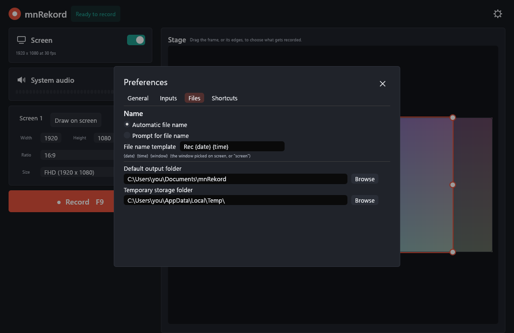

Contents
- Introduction
- Installation
- Quick start
- The main window
- Choosing what to record
- Recording
- Recordings and files
- Preferences
- Keyboard shortcuts
- Tray icon
- Command line
- Recovering a recording
- Troubleshooting
- Technical notes
- Building from source
mnRekord manual
Introduction
mnRekord is a small screen recorder for Windows. It records a part of the screen, a whole monitor or a single window, together with the sound the computer plays, and saves the result as an MP4 video. The window is dark, simple, and has everything you need to start a recording in a few clicks.
What it does:
- records a region, a monitor or a window, chosen on a preview of your desktop or drawn directly on the desktop;
- keeps a 16:9 or 9:16 aspect ratio while you resize, with ready-made sizes (360p, HD, FHD, QHD, 4K UHD);
- can follow a window while recording, so the picture stays on it when you move it;
- records system audio (everything you hear) as AAC;
- draws the mouse pointer, with an optional halo and a ring on clicks;
- pauses, resumes and adds markers; splits long recordings into parts; makes a GIF from the last recording;
- is controlled by global shortcuts, a tray icon or the command line;
- offers to recover a recording that was cut off by a crash.
mnRekord does not record a microphone or a webcam.
Installation
Requirements
- Windows 10 or Windows 11, 64-bit.
- A playback device, if you want system audio.
- The Windows H.264 and AAC encoders. They are part of Windows; on the “N” editions install Microsoft’s Media Feature Pack first.
With the installer
Run mnRekord-0.2.0-setup.exe. By default it installs for your user only and needs no administrator rights; the dialog also offers an install for all users. It adds a Start menu entry, optionally a desktop icon, and an uninstaller (Settings → Apps). The installer is available in English and Hungarian.
Without installing
mnrekord.exe is a single file. Copy it anywhere and run it; nothing else is needed.
Uninstalling
Remove mnRekord in Settings → Apps. Your settings (%APPDATA%\mnRekord) and your recordings are not deleted.
Quick start
- Start mnRekord. The stage on the right shows your desktop and a frame; the frame is what will be recorded.
- Drag the frame or its handles to cover what you want to record. Or click Screen 1 to record a whole monitor, or Draw on screen to click a window.
- Pick a size with Ratio and Size, for example 16:9 and FHD.
- Press Record (or F9). A 3-2-1 countdown starts, and the window turns into a slim bar.
- Press Stop (or F10). The video is saved in
Documents\mnRekordand opens in your video player.
The main window

| Part | What it does |
|---|---|
| Status (top, next to the name) | “Ready to record” when a recording can start. |
| Gear (top right) | Opens the Preferences. |
| Screen card | Switch for recording the screen. Shows the size and frame rate of the video, for example 1920 x 1080 at 30 fps. |
| System audio card | Switch for recording the sound the computer plays, with a level meter that moves while something is playing. |
| Region card | Monitors, Draw on screen, width and height, Ratio, Size and Follow. See Choosing what to record. |
| Record button | Starts the recording. Shows the shortcut (F9). It is grey when nothing is switched on to record. |
| Last recording and Make GIF | Appear under the Record button after a recording, when “Exit after stopped” is switched off (otherwise mnRekord has already quit). See Recordings and files. |
| Stage | A live picture of all your monitors, with the frame you are going to record. |
Choosing what to record
The frame on the stage
- Move: drag inside the frame.
- Resize: drag one of the eight handles (four corners, four edge middles).
- With a locked ratio, a corner grows from the opposite corner, following the mouse in any direction. An edge grows around the middle of the frame, and the frame is pushed back inside the screen when it would leave it, so a handle never gets stuck.
- With Free ratio the edges and corners resize the frame without any constraint.
Monitors
The Screen 1, Screen 2 … buttons select a whole monitor. With a locked ratio the largest frame of that ratio fits in the monitor, centred.
Draw on screen
The window disappears and a still picture of your desktop covers the screen. Then:
- click a window or a monitor to record it (a window is recorded as it is placed at the moment, with its visible frame);
- or drag a rectangle; a magnifier next to the pointer helps you hit the exact pixel;
- Esc cancels.
When you pick a window, the Follow switch appears (see below).
Ratio and size
The Ratio list is the base setting: 16:9, 9:16 or Free. With 16:9 or 9:16 the frame always keeps that ratio, whatever you do with it, and the Size list offers sizes of that ratio:
| Name | 16:9 | 9:16 |
|---|---|---|
| 360p | 640 × 360 | 360 × 640 |
| HD | 1280 × 720 | 720 × 1280 |
| FHD | 1920 × 1080 | 1080 × 1920 |
| QHD | 2560 × 1440 | 1440 × 2560 |
| 4K UHD | 3840 × 2160 | 2160 × 3840 |
Sizes bigger than your screen are greyed out. Picking a size keeps the centre of the frame where it is. With Free the list offers AD (600 × 315), SD, HD, FHD, 2K, QHD and 4K UHD.
Width and Height are numbers you can drag or type. With a locked ratio changing one changes the other. The video is always an even number of pixels wide and high, because H.264 needs that.
Follow a window
When the region was picked by clicking a window, the Follow switch appears under Size. If it is on, the frame keeps its place inside the window during the recording: move the window and the picture moves with it. The frame keeps its size. A minimized or closed window is not followed; the frame stays where it was last seen.
The same can be done from the command line, see followwindow. Selecting a monitor or drawing a rectangle switches following off.
Recording

Start
Press Record or F9. After a short delay the numbers 3, 2, 1 appear on the recorded region (you can switch the countdown off). The window shrinks to a slim bar, which you can drag anywhere. By default it is excluded from the recording, so it never appears in the video. When “Show region indicator” is on, a thin frame marks the recorded area on the desktop (it is not recorded either).
The bar
| Control | What it does |
|---|---|
| Timer | Recorded time. The dot blinks while recording and is amber while paused. |
| Pause / Resume | Pauses and continues. Paused time is not in the video. (Shortcut: F9.) |
| Stop | Ends the recording and saves it. (Shortcut: F10.) |
| Marker | Notes the current time in a text file next to the video. (Shortcut: Ctrl+M.) |
| Restart | Asks whether to delete the recording so far; if you agree, you are back in the main window to start again. |
| Meter | The level of the system audio. |
| ✕ | Asks whether to delete this recording and quit. |
The window title also shows the state, so the taskbar tells you even when the bar is hidden: ● 00:01:24 mnRekord while recording and Paused 00:01:24 mnRekord while paused.
Pause and the mouse
If “Restore cursor location after pause” is on (the default), the mouse pointer jumps back to where it was when you paused, once you resume.
Stop and save
After Stop the recording is saved in the output folder, named after the file name template. If “Prompt for file name” is selected, a Save dialog asks for the name. With the defaults, the recording is then opened in your video player and mnRekord quits (“Exit after stopped”, “Open recording after stopped”).
If you stop during the countdown, nothing is saved.
Low disk space
If less than about 300 MB is free on the drive of the temporary folder, the recording stops by itself and what was recorded so far is saved.
Recordings and files
The video
MP4 with H.264 video (Main profile) and AAC stereo audio at 48 kHz. The file is written in fragments, so even a recording cut short by a crash plays up to the last fragment.
File names
The name comes from a template (Preferences → Files). The default is Rec {date} {time}, which gives Rec 2026-11-07 14-05-09.mp4.
| Token | Replaced by |
|---|---|
{date} | The date, 2026-11-07 |
{time} | The time, 14-05-09 |
{window} | The title of the window you picked on screen, or screen |
Characters that are not allowed in file names are replaced by _. If a file with that name exists, (1), (2) … is added.
Markers
If you added markers, a text file name.markers.txt is saved next to the video, one line per marker: the time and the marker’s number, separated by a tab, for example 00:01:12.500 Marker 1. Markers are only recorded when the screen is recorded.
Split recordings
With Start a new file every N min (Preferences → Inputs) a long recording is cut into parts. When a part is full, the next file starts at once and the finished part is closed. The files are named name-part1.mp4, name-part2.mp4 … and each one plays by itself. Paused time does not count. If a crash happens, only the part being written is at risk.
GIF
When “Exit after stopped” is off, mnRekord stays open after a recording and shows Make GIF under the Record button. It turns the last recording into an animated GIF next to it. The GIF is at most 640 pixels wide, 12 frames a second, and uses the first 30 seconds. GIFs are big files; a 30-second picture can be over 10 MB. Making it takes a few seconds, and the folder opens when it is ready. For a split recording the GIF is made from the first part.
Preferences
Open them with the gear. Most changes apply at once; everything is saved when you close the Preferences.
General

| Setting | Meaning |
|---|---|
| Show recorder countdown | The 3-2-1 before the recording starts. |
| Do not capture recorder on screen | Hides mnRekord’s own windows (bar, countdown, region frame) from the video. |
| Restore cursor location after pause | Moves the pointer back where it was when you resume. |
| Show the mouse pointer in the recording | Draws the pointer into the video. |
| Highlight the pointer and clicks | A soft yellow halo around the pointer, and a red ring while a mouse button is held down. |
| Exit after stopped | Quits mnRekord when the recording is saved. |
| Open recording after stopped | Opens the saved file in the default player. |
| Show region indicator | A thin frame on the desktop around the region while it is not the whole monitor. |
| Automatically minimize recording window | Hides the bar when the recording starts (use the shortcuts or the tray icon). |
Inputs

| Setting | Meaning |
|---|---|
| Maximum frame rate | 15, 24, 30 or 60 frames a second. |
| Quality | 1 to 100, default 75. Higher is sharper and gives bigger files. On a test clip with moving colour bars, quality 20 gave about 1 MB and quality 90 about 8 MB for the same ten seconds. |
| Start a new file every | Minutes after which a new part starts; 0 means one file. See Split recordings. |
| Use the graphics card to encode | Lets Windows use the GPU’s H.264 encoder when there is one. After a recording the name of the encoder that was used is shown here. Switch it off if you have problems with a graphics driver. |
Files

| Setting | Meaning |
|---|---|
| Automatic file name / Prompt for file name | Save under the template’s name, or ask in a Save dialog. |
| File name template | With {date}, {time}, {window}. |
| Default output folder | Where recordings are saved. Default Documents\mnRekord. |
| Temporary storage folder | Where a recording is written while it runs. A fast drive with enough space is best. Default: the Windows temp folder. |
Shortcuts

See the next chapter.
Keyboard shortcuts
The shortcuts work everywhere in Windows, also when mnRekord is in the background.
| Action | Default |
|---|---|
| Record, pause and resume | F9 |
| Stop | F10 |
| Add marker | Ctrl+M |
To change one, open Preferences → Shortcuts, click the shortcut and press the new key or combination (a function key, a letter or a digit, with Ctrl, Alt or Shift if you like). Restore defaults brings back the three above. If another program already owns a shortcut, mnRekord tells you that it could not assign it.
Tray icon
While mnRekord runs there is a coral icon in the notification area of the taskbar (it may be in the “hidden icons” group). A left click brings the window back. The right-click menu has:
- Show mnRekord – brings the window to the front;
- Start recording / Stop recording – the entry changes with the state;
- Quit.
Command line
A second start of mnrekord.exe does not open a second window. It hands its arguments to the running copy and exits. If no copy runs, the arguments are executed by the copy that starts. Commands can be written with /, - or -- in front, or without, and are not case sensitive; several commands can be given at once.
mnrekord setoutputpath "D:\Videos" setscreenframerate 60 record
mnrekord stop| Command | Effect |
|---|---|
record | Starts a recording (with the countdown). |
pause, resume | Pause or continue the running recording. |
stop | Stops and saves, as the Stop button does. |
writetofile | Stops, saves with an automatic name without asking, and quits. |
drawregion | Starts “Draw on screen”. |
setregion X Y W H | Sets the region in screen pixels. |
followwindow "text" | Selects the first visible window whose title contains the text, records it and follows it. |
setscreenframerate N | 15, 24, 30 or 60. |
setoutputpath "folder" | Sets the output folder. |
enablescreenrecording, disablescreenrecording | Switch the Screen card on or off. |
unmutesystemaudio, mutesystemaudio | Switch System audio on or off. |
One more mode does not use the running copy:
mnrekord --gif recording.mp4 recording.gifIt converts a recording to a GIF and exits. The result is a text file recording.gif.log that says ok or what went wrong.
setoutputpath, setregion, setscreenframerate and the other setting commands are saved in the settings, like changes made in the window.Recovering a recording
A recording is written to the temporary folder while it runs. If mnRekord is closed in an unusual way (a crash, a power cut, the process killed), the next start shows Recover recording:
- Recover asks where to save the file and keeps what was recorded, up to the last written fragment (a few seconds before the end may be lost);
- Delete throws it away.
Until you decide, the unfinished recording stays in the temporary folder, in a folder named trecRec….
Troubleshooting
| Problem | What to try |
|---|---|
| The Record button is grey, or “Turn on the screen to record” | Switch on the Screen card. mnRekord needs the screen; audio alone is not recorded. |
| “Unable to record system audio” | Connect or enable a playback device in Windows sound settings, then switch System audio on again. |
| A window is black in the video | Some programs (protected video, some games in exclusive full screen) do not allow screen capture. Run the game in windowed or borderless mode. |
| The Windows sign-in or permission (UAC) screen is not recorded | That is by design in Windows; it is a protected desktop. |
| “Not Enough Space On Disk” | Free some space or choose another temporary folder (Preferences → Files). The recording up to that point is saved. |
| The video stutters on a slow computer | Lower the frame rate or the size, and leave “Use the graphics card to encode” on. Closing programs that use the GPU helps. |
| A shortcut does nothing | Another program may own it. Pick a different key in Preferences → Shortcuts. |
| The recorder itself appears in the video | Check that “Do not capture recorder on screen” is on. |
| The size changed to something I did not choose | With a locked ratio the frame always keeps the ratio. Choose Free in the Ratio list to resize without it. |
Technical notes
- Capture: the Windows Desktop Duplication API (DXGI), one duplication per monitor that the region touches; GDI is the fallback. The region is copied at the chosen frame rate; the pointer is drawn on top. Every coordinate is in physical pixels.
- Video: frames are converted to NV12 (BT.709, limited range) and encoded with the Media Foundation H.264 encoder, in quality-based rate control. The hardware encoder is used when available.
- Audio: the system sound is captured with WASAPI loopback (48 kHz, stereo) and encoded to AAC at 160 kbit/s. Audio and video follow the same recording clock, so pauses and silence do not shift them against each other.
- Files: fragmented MP4, written by the Media Foundation sink writer.
- Settings:
%APPDATA%\mnRekord\settings.json. Delete the file to go back to the defaults. - One copy: a named mutex keeps one running copy; commands go to it over the named pipe
\\.\pipe\mnRekord.
Building from source
You need Windows 10 or newer and a current stable Rust toolchain.
git clone https://github.com/miklosnemeth/mnRekord
cd mnRekord
cargo test --release
cargo build --releaseThe program is target\release\mnrekord.exe. To make the installer, install Inno Setup 6 and run installer\build.ps1; the result is dist\mnRekord-<version>-setup.exe.
mnRekord is written in Rust with egui and the windows crate. It is released under the MIT license.